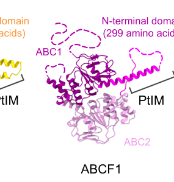

ABCF2 encodes ATP-binding cassette sub-family F member 2, a soluble member of the ABCF family with two ABC nucleotide-binding domains and no transmembrane domains. It is best described as a cytosolic ABC-family ATPase rather than a membrane transporter. ABCF2 expression is regulated by NFE2L2/NRF2 through a promoter antioxidant-response element in ovarian cancer cells, where altered ABCF2 abundance affects cisplatin sensitivity, but the direct molecular mechanism linking ABCF2 to drug resistance remains unresolved. ABCF2 has also been reported as a putative anti-apoptotic host factor that is bound and destabilized by the enteropathogenic Escherichia coli type III effector EspF, with cytoplasmic and partial mitochondrial localization, consistent with a role in restraining the intrinsic (mitochondrial) apoptotic pathway.
| GO Term | Evidence | Action | Reason |
|---|---|---|---|
|
GO:0005524
ATP binding
|
IBA
GO_REF:0000033 |
ACCEPT |
Summary: ABCF2 has two ABC nucleotide-binding domains and conserved ATP-binding motifs. ATP binding is therefore well supported as a core molecular property of the protein.
Reason: The phylogenetic annotation is consistent with UniProt feature annotation of two ABC transporter domains and two ATP-binding sites. This does not imply that ABCF2 is a membrane transporter.
Supporting Evidence:
file:human/ABCF2/ABCF2-uniprot.txt
DOMAIN 86..325
file:human/ABCF2/ABCF2-uniprot.txt
BINDING 118..125
|
|
GO:0005524
ATP binding
|
IEA
GO_REF:0000002 |
ACCEPT |
Summary: InterPro-based ATP-binding annotation is consistent with the two ABC-transporter-like nucleotide-binding domains in ABCF2.
Reason: The domain architecture supports ATP binding. The annotation is generic but appropriate for ABCF2's molecular-function model.
Supporting Evidence:
file:human/ABCF2/ABCF2-uniprot.txt
DOMAIN 396..613
file:human/ABCF2/ABCF2-uniprot.txt
BINDING 430..437
|
|
GO:0016887
ATP hydrolysis activity
|
IEA
GO_REF:0000002 |
ACCEPT |
Summary: ABCF2 is an ABCF-family protein with two ABC nucleotide-binding domains, supporting annotation as an ATP-hydrolyzing ABC-family ATPase.
Reason: ATP hydrolysis activity is the most informative existing molecular function term for ABCF2. The biological process coupled to this ATPase activity remains uncertain; the ribosome-associated quality-control projection was not accepted without direct ABCF2 evidence.
Supporting Evidence:
file:human/ABCF2/ABCF2-uniprot.txt
Belongs to the ABC transporter superfamily. ABCF family.
PMID:28112439
ABCF2 possesses nucleotide-binding domains, but has no transmembrane domains, which makes it different from other members of the ATP binding cassette family since it cannot function as a membrane transporter
|
|
GO:0005829
cytosol
|
IDA
GO_REF:0000052 |
ACCEPT |
Summary: Cytosol localization is consistent with ABCF2 being a soluble ABCF-family protein lacking transmembrane domains.
Reason: The HPA-derived cytosol annotation matches the published description of ABCF2 as cytosolic and the UniProt caution that it lacks transmembrane domains.
Supporting Evidence:
PMID:28112439
Among these genes, ABCF2, a cytosolic member of the ABC superfamily of transporters
file:human/ABCF2/ABCF2-uniprot.txt
Lacks transmembrane domains and is probably not involved in transport.
|
|
GO:0005886
plasma membrane
|
TAS
Reactome:R-HSA-9796042 |
REMOVE |
Summary: Reactome models NFE2L2-dependent ABCF2 expression, but the primary evidence supports ABCF2 as a cytosolic, non-transmembrane ABCF protein rather than a plasma membrane transporter.
Reason: The Reactome event is useful as NFE2L2 target-gene context, but plasma membrane localization is not supported by the cited primary literature and conflicts with the soluble ABCF-domain architecture.
Supporting Evidence:
Reactome:R-HSA-9796042
ABCF2 is an NFE2L2 target gene that contains a functional ARE sequence in the promoter which is confirmed through ChIP assay in Human Ovarian cancer cell lines.
PMID:28112439
Unlike other subgroups, ABCF members have NBDs but not TMDs, and thus do not function as transporters of molecules across the membrane.
file:human/ABCF2/ABCF2-uniprot.txt
Lacks transmembrane domains and is probably not involved in transport.
|
|
GO:0016020
membrane
|
HDA
PMID:19946888 Defining the membrane proteome of NK cells. |
REMOVE |
Summary: ABCF2 was identified in a high-throughput NK-cell membrane-proteome study, but the same study notes that many identified proteins were transient or nonintegral membrane-associated species.
Reason: ABCF2 lacks transmembrane domains and is described in primary literature as cytosolic. The broad HDA membrane row is likely a fractionation or transient-association result rather than a defining localization.
Supporting Evidence:
PMID:19946888
The remaining species were largely involved in cellular processes and molecular functions that could be predicted to be transiently associated with membranes.
PMID:28112439
Among these genes, ABCF2, a cytosolic member of the ABC superfamily of transporters
file:human/ABCF2/ABCF2-uniprot.txt
Lacks transmembrane domains and is probably not involved in transport.
|
Q: Does ABCF2 directly bind ribosomes or participate in ribosome-associated protein quality control, or is its PN placement under "other RQC processes" based on family/context inference?
Q: What substrates or client complexes are coupled to ABCF2 ATP hydrolysis in cytosol?
Q: By what molecular mechanism does ABCF2 abundance alter cisplatin sensitivity in ovarian cancer cells if it is not a membrane transporter?
Q: Does ABCF2 have a bona fide anti-apoptotic function at mitochondria, as suggested by the EspF-interaction study (PMID:17064289), and is the EspF-driven decrease in ABCF2 mediated by ubiquitin-dependent degradation?
Experiment: Test endogenous ABCF2 association with translating ribosomes, collided ribosomes, and RQC factors by polysome profiling or ribosome co-sedimentation before and after ribosome-stalling treatments, followed by ABCF2 immunoblot or targeted mass spectrometry.
Hypothesis: ABCF2 will only justify a protein-quality-control GO annotation if it reproducibly associates with stalled-ribosome/RQC complexes.
Experiment: Purify ABCF2 and test ATPase activity with and without ribosomes, eIF factors, and candidate stress-response interactors, including ATPase-dead Walker motif mutants.
Hypothesis: ABCF2 is an active soluble ABC ATPase whose hydrolysis rate is stimulated by a specific cytosolic client complex.
The research report should be a detailed narrative explaining the function, biological processes, and localization of the gene product. Citations should be given for all claims.
You should prioritize authoritative reviews and primary scientific literature when conducting research. You can supplement
this with annotations you find in gene/protein databases, but these can be outdated or inaccurate.
We are specifically interested in the primary function of the gene - for enzymes, what reaction is catalyzed, and what is the substrate specificity? For transporters, what is the substrate? For structural proteins or adapters, what is the broader structural role? For signaling molecules, what is the role in the pathway.
We are interested in where in or outside the cell the gene product carries out its function.
We are also interested in the signaling or biochemical pathways in which the gene functions. We are less interested in broad pleiotropic effects, except where these elucidate the precise role.
Include evidence where possible. We are interested in both experimental evidence as well as inference from structure, evolution, or bioinformatic analysis. Precise studies should be prioritized over high-throughput, where available.
ABCF2 (UniProt Q9UG63; gene symbol ABCF2; Homo sapiens) is an ATP-binding cassette (ABC) superfamily protein in the ABCF subfamily. Unlike canonical ABC transporters that couple ATP hydrolysis to substrate translocation across membranes, ABCF proteins are primarily soluble/cytosolic ABC ATPases that act on ribosomes/translation, rather than as transmembrane pumps. This distinction is emphasized in ABCF-focused reviews that note the ABC_tran_Xtn/PtIM linker has not been associated with transmembrane transport and that ABCF proteins operate as translation factors binding the ribosome (fostier2021abc‐ftranslationfactors pages 4-6, fostier2021abc‐ftranslationfactors pages 1-4).
ABCF proteins are described as soluble proteins built around two tandem ABC nucleotide-binding domains (NBDs) (ATPase cassettes) connected by a conserved PtIM (P-site tRNA interaction motif)-containing linker (also termed ABC_tran_Xtn). Across structurally characterized ABCF proteins, the PtIM forms an α-helical hairpin that can contact peptidyl-tRNA and the peptidyl transferase center (PTC) when the ABCF protein binds the ribosome near the E site. The prevailing family-level model is that ATP binding/hydrolysis drives conformational cycling that modulates translation (initiation/elongation/termination, rescue of stalled ribosomes, or protection of the PTC from inhibitors) (fostier2021abc‐ftranslationfactors pages 4-6, fostier2021abc‐ftranslationfactors pages 1-4, saha2023decipheringthestructural pages 2-3).
Important evidence gap for ABCF2 specifically: while family-level evidence strongly supports that ABCF paralogs are ATP-driven translation factors, the retrieved literature did not include a direct biochemical demonstration (e.g., ribosome-binding assay, ATPase kinetics on ribosome, cryo-EM structure) for human ABCF2 itself. Therefore, translation-factor function for ABCF2 should currently be stated as family-informed inference, unless additional ABCF2-specific ribosome studies are identified (fostier2021abc‐ftranslationfactors pages 28-30, ousalem2019abcfproteinsin pages 6-10).
A review figure set provides a schematic of human ABCF protein architectures and E-site ribosome-binding geometry, and summarizes known/proposed roles across ABCF1/2/3 (fostier2021abc‐ftranslationfactors media dd376791, fostier2021abc‐ftranslationfactors media 33fe9305). These visuals support the interpretation that ABCF2 is best conceptualized within the ABCF “translation factor” framework rather than as a membrane transporter.
The strongest direct functional evidence for human ABCF2 comes from enteropathogenic E. coli (EPEC) infection studies showing ABCF2 is a host factor that counteracts mitochondrial apoptosis and is antagonized by a bacterial effector.
Physical interaction partner (direct): EPEC effector EspF
Nougayrède et al. (Cellular Microbiology, 2007-03; https://doi.org/10.1111/j.1462-5822.2006.00820.x) identified human ABCF2 as an EspF-binding protein by affinity purification/mass spectrometry and confirmed interaction by yeast two-hybrid and co-immunoprecipitation from infected cells (nougayrede2007enteropathogenicescherichiacoli pages 1-2, nougayrede2007enteropathogenicescherichiacoli pages 2-4).
Functional consequence: EspF delivery reduces host ABCF2 levels and promotes caspase activation
Infection reduced cellular ABCF2 levels in an EspF dose-dependent manner, and ABCF2 depletion sensitized cells to caspase activation during infection—consistent with an anti-apoptotic role for ABCF2 that EspF counteracts (nougayrede2007enteropathogenicescherichiacoli pages 10-11, nougayrede2007enteropathogenicescherichiacoli pages 7-8).
Quantitative phenotype (key statistics):
In HeLa cells, ABCF2 knockdown increased cleaved caspase-9 levels by ~4-fold upon infection; ABCF2 knockdown also produced ~50% more cleaved caspase-3 after staurosporine treatment. Infection conditions included MOI 100:1 for 3 h (nougayrede2007enteropathogenicescherichiacoli pages 7-8).
Localization in this context:
The same work describes ABCF2 as primarily cytoplasmic with partial mitochondrial localization, while EspF is injected into the cytoplasm and sorted to mitochondria—supporting a model in which ABCF2 impacts mitochondrial/intrinsic apoptosis signaling (nougayrede2007enteropathogenicescherichiacoli pages 8-10).
Mechanistic interpretation (authoritative):
The EspF–ABCF2 binding event was proposed to inhibit ABCF2’s protective function; the route by which EspF reduces ABCF2 levels (e.g., ubiquitination-mediated degradation) was not resolved in the excerpted evidence (nougayrede2007enteropathogenicescherichiacoli pages 10-11, fostier2021abc‐ftranslationfactors pages 28-30).
ABCF family members are experimentally established ribosome-binding translation factors that bind in similar geometry (E-site) and alter the PTC/tRNA configuration. Reviews highlight that “all biochemically characterized” ABCF proteins participate in protein synthesis and directly interact with ribosomes, with cryo-EM showing conserved binding at the E site and PtIM engagement of P-site tRNA/PTC (fostier2021abc‐ftranslationfactors pages 4-6, fostier2021abc‐ftranslationfactors pages 1-4).
However, for ABCF2 specifically, the reviewed texts note links to infection/cancer but state its role is unclear and do not supply ABCF2-specific ribosome-binding experiments (ousalem2019abcfproteinsin pages 6-10). Consequently, the most defensible statement is:
- ABCF2 is a soluble ABC ATPase with domain architecture characteristic of ribosome-binding translation-factor ABCFs; direct ABCF2 ribosome-binding evidence remains limited in the retrieved set. (fostier2021abc‐ftranslationfactors pages 28-30, ousalem2019abcfproteinsin pages 6-10)
Wang et al. (bioRxiv, 2024-12; https://doi.org/10.1101/2024.12.03.626657) reported a TurboID proximity-labeling screen that nominated ABCF2 as a host interactor for three P. multocida adhesins (PlpE, PtfA, Hsf-2), with validation by co-immunoprecipitation and bio-layer interferometry (wang2024turboidbasedproximitylabeling pages 5-10, wang2024turboidbasedproximitylabeling pages 19-24).
Functional perturbation: ABCF2 gain/loss of function altered adhesion/invasion
ABCF2 knockdown/knockout reduced P. multocida adherence/invasion, whereas ABCF2 overexpression increased these outcomes (wang2024turboidbasedproximitylabeling pages 1-5).
Mechanistic signaling: p38 MAPK and NF-κB regulation; p53-dependent apoptosis
The preprint linked infection-induced ABCF2 upregulation to p38 MAPK and NF-κB signaling and connected ABCF2 to a p53-dependent apoptotic pathway during infection (wang2024turboidbasedproximitylabeling pages 5-10, wang2024turboidbasedproximitylabeling pages 10-14).
Key quantitative experimental parameters (methods/data context):
The study reports infection conditions commonly at MOI = 200, NF-κB inhibitor BAY11-7082 (5 μM), p38 inhibitor BIRB796 (40 μM), and p53 inhibitor pifithrin-α (40 μM); NF-κB and p38 activation were profiled over multi-hour time courses (wang2024turboidbasedproximitylabeling pages 19-24).
Cautionary note (expert analysis): Because this is a preprint and proposes an atypical role (“surface adhesion receptor”) for a protein generally described as cytosolic/soluble in ABCF family literature, this claim should be treated as provisional pending peer review and independent replication (fostier2021abc‐ftranslationfactors pages 4-6, fostier2021abc‐ftranslationfactors pages 1-4, wang2024turboidbasedproximitylabeling pages 5-10).
Tatara et al. (IJMS, 2024-03; https://doi.org/10.3390/ijms25052998) reviewed GCN1/GCN2 biology and discussed ABCF paralogs as candidate orthologs of yeast GCN20. The review states ABCF3 is more similar to GCN20 than ABCF1/ABCF2 and that ABCF3 (not ABCF2) is required as the GCN20 ortholog for amino-acid-starvation–induced GCN2 activation (tatara2024emergingroleof pages 2-4). This weighs against assigning ABCF2 a primary GCN20-like role in the integrated stress response.
ABCF2 is used as a host factor in mechanistic studies of bacterial effectors and infection-triggered apoptosis. The EPEC EspF–ABCF2 axis provides a concrete example of how pathogens subvert host apoptotic thresholds by targeting a protective host protein (nougayrede2007enteropathogenicescherichiacoli pages 1-2, nougayrede2007enteropathogenicescherichiacoli pages 7-8).
The 2024 P. multocida preprint extends ABCF2 use into adhesion/invasion receptor discovery pipelines using proximity labeling and multi-assay validation (wang2024turboidbasedproximitylabeling pages 5-10, wang2024turboidbasedproximitylabeling pages 19-24).
While ABCF2 has been discussed in cancer-associated contexts in reviews, the strongest retrieved evidence for ABCF2 concerns infection-apoptosis mechanisms rather than a validated cancer-driver mechanism. Database aggregations (Open Targets) connect ABCF2 to multiple diseases/traits with modest association scores, supporting exploratory biomarker hypothesis generation rather than definitive clinical implementation (OpenTargets Search: -ABCF2).
Multiple authoritative reviews converge on the view that ABCF proteins are ribosome-interacting translation factors that reshape PTC/tRNA geometry and can perform translation regulation/rescue/protection functions; critically, these reviews distinguish ABCF proteins from membrane ABC exporters and do not treat ABCF proteins as substrate pumps (fostier2021abc‐ftranslationfactors pages 4-6, fostier2021abc‐ftranslationfactors pages 1-4, fostier2021abc‐ftranslationfactors pages 30-33).
Key quantitative/statistical points extracted from primary studies and databases:
- ABCF2 knockdown increased infection-associated cleaved caspase-9 ~4-fold in HeLa cells (EPEC infection), and increased staurosporine-induced cleaved caspase-3 ~50%; infection MOI 100:1 (3 h) (Nougayrède et al., 2007-03; https://doi.org/10.1111/j.1462-5822.2006.00820.x) (nougayrede2007enteropathogenicescherichiacoli pages 7-8).
- In P. multocida infection experiments (preprint), typical infection conditions included MOI 200, with pathway inhibitors BAY11-7082 5 μM (NF-κB), BIRB796 40 μM (p38), and pifithrin-α 40 μM (p53), alongside time-course profiling of NF-κB and p38 activation (Wang et al., 2024-12; https://doi.org/10.1101/2024.12.03.626657) (wang2024turboidbasedproximitylabeling pages 19-24).
- Open Targets lists ABCF2 associations with modest scores (e.g., renal cell carcinoma score ~0.0647; neurodegenerative disease score ~0.1584; abnormality of skeletal system score ~0.2105), with evidence_size = 3 for each listed disease in the retrieved output (OpenTargets Platform; target ENSG00000033050) (OpenTargets Search: -ABCF2).
| Topic | Key finding | Evidence type | System | Quantitative/statistical details (if any) | Primary citation (DOI URL + year) | PaperQA context citation ID |
|---|---|---|---|---|---|---|
| Function / family context | ABCF2 belongs to the ABC-F family, whose members are soluble ABC ATPases rather than membrane transporters. Family-level reviews state ABC-F proteins lack transmembrane domains, bind the ribosomal E site, and act as translation factors that modulate the peptidyl-transferase center and/or stalled-ribosome states; this supports annotation of human ABCF2 as a non-TMD ATPase with likely translation-related function, but not as a classical transporter. | Review | Cross-species ABC-F family; includes human ABCF paralogs | No ABCF2-specific activity constant reported; qualitative consensus that ABC-F proteins are cytosolic/non-membrane and ribosome-associated | Fostier et al., 2021, https://doi.org/10.1002/1873-3468.13984; Ousalem et al., 2019, https://doi.org/10.1016/j.resmic.2019.09.005; Saha et al., 2023, https://doi.org/10.29011/2577-1515.100225 | (fostier2021abc‐ftranslationfactors pages 4-6, fostier2021abc‐ftranslationfactors pages 1-4, ousalem2019abcfproteinsin pages 6-10, saha2023decipheringthestructural pages 2-3, fostier2021abc‐ftranslationfactors pages 30-33, saha2023decipheringthestructural pages 3-5) |
| Localization / structural inference | Family-level structural summaries indicate ABC-F proteins are cytosolic and bind ribosomes in E-site geometry via tandem ABC domains plus the PtIM/ABC_tran_Xtn linker. For ABCF2 specifically, direct ribosome-binding evidence was not retrieved here, so subcellular localization is best described as inferred cytoplasmic/ribosome-associated rather than definitively proven in the available primary ABCF2 literature. | Review / inference | ABC-F proteins broadly; human ABCF2 by family inference | Qualitative only; no direct ABCF2 localization percentages reported in these family reviews | Fostier et al., 2021, https://doi.org/10.1002/1873-3468.13984; Saha et al., 2023, https://doi.org/10.29011/2577-1515.100225 | (fostier2021abc‐ftranslationfactors pages 4-6, fostier2021abc‐ftranslationfactors pages 1-4, saha2023decipheringthestructural pages 2-3, saha2023decipheringthestructural pages 3-5, fostier2021abc‐ftranslationfactors media dd376791) |
| Pathway / apoptosis / bacterial infection | The strongest direct functional evidence for human ABCF2 is from EPEC infection studies: EspF physically binds ABCF2, lowers host ABCF2 levels, and ABCF2 depletion sensitizes cells to mitochondrial apoptosis. These data support ABCF2 as an anti-apoptotic host factor whose inhibition promotes caspase-9/-3 activation during infection. | Primary research | Human HeLa and Caco-2 cells infected with enteropathogenic E. coli | ABCF2 peptides identified in EspF pull-down (~12.4% coverage); infection experiments used MOI 100:1 for 3 h; ABCF2 siRNA increased cleaved caspase-9 ~4-fold and increased staurosporine-induced cleaved caspase-3 by ~50% versus control | Nougayrède et al., 2007, https://doi.org/10.1111/j.1462-5822.2006.00820.x | (nougayrede2007enteropathogenicescherichiacoli pages 1-2, nougayrede2007enteropathogenicescherichiacoli pages 10-11, nougayrede2007enteropathogenicescherichiacoli pages 8-10, nougayrede2007enteropathogenicescherichiacoli pages 7-8, nougayrede2007enteropathogenicescherichiacoli pages 2-4) |
| Localization in infection context | In the EspF study, ABCF2 was described as primarily cytoplasmic with partial mitochondrial localization, while EspF is type-III-secreted into host cells and traffics to mitochondria. This supports a model in which ABCF2 can influence intrinsic/mitochondrial apoptosis during bacterial pathogenesis. | Primary research | Human epithelial cells during EPEC infection | Qualitative localization; no compartment percentages given in retrieved text | Nougayrède et al., 2007, https://doi.org/10.1111/j.1462-5822.2006.00820.x | (nougayrede2007enteropathogenicescherichiacoli pages 8-10) |
| Disease / pathogen-host interaction | A 2024 preprint proposed ABCF2 as a host adhesion receptor/factor for Pasteurella multocida. TurboID proximity labeling, co-IP, BLI, overexpression, knockdown, and knockout experiments all supported a role for ABCF2 in bacterial adhesion/invasion, extending ABCF2 biology beyond apoptosis to host–pathogen interface functions. | Preprint | Human A549, HEK293T and porcine NPTr cells; mouse infection model | TurboID labeling with 50 μM biotin for 15 min; infections commonly at MOI 200; gentamicin protection 100 μg/mL for 1 h; three replicates; BLI used ABCF2 at 18.75–600 nM | Wang et al., 2024, https://doi.org/10.1101/2024.12.03.626657 | (wang2024turboidbasedproximitylabeling pages 5-10, wang2024turboidbasedproximitylabeling pages 14-19, wang2024turboidbasedproximitylabeling pages 1-5, wang2024turboidbasedproximitylabeling pages 19-24, wang2024turboidbasedproximitylabeling pages 10-14) |
| Pathway / signaling | In the same P. multocida preprint, infection-induced ABCF2 upregulation was linked to p38 MAPK and NF-κB signaling, and ABCF2 was connected to p53-dependent apoptosis. Thus, ABCF2 was placed downstream of infection-triggered stress/inflammatory signaling and upstream of apoptosis-related outputs. | Preprint | Cell culture infection models | P-P65 increased at 6 hpi; BAY11-7082 used at 5 μM; BIRB796 at 40 μM; pifithrin-α at 40 μM; p38 assayed over 0–20 h and NF-κB over 1–12 h | Wang et al., 2024, https://doi.org/10.1101/2024.12.03.626657 | (wang2024turboidbasedproximitylabeling pages 5-10, wang2024turboidbasedproximitylabeling pages 19-24, wang2024turboidbasedproximitylabeling pages 35-37, wang2024turboidbasedproximitylabeling pages 10-14, wang2024turboidbasedproximitylabeling pages 37-38, wang2024turboidbasedproximitylabeling pages 44-45) |
| GCN1/GCN2 / integrated stress response context | Recent review evidence does not support a direct ABCF2 role as the mammalian GCN20-like factor in amino-acid-starvation signaling. Instead, ABCF3 was described as more similar to yeast GCN20, whereas ABCF2 was explicitly noted as less similar and not assigned the GCN20-ortholog function. | Review | Mammalian/yeast comparative signaling context | Qualitative statement only; no effect size reported for ABCF2 | Tatara et al., 2024, https://doi.org/10.3390/ijms25052998 | (tatara2024emergingroleof pages 2-4) |
| Disease associations / database summary | Open Targets links ABCF2 to several diseases/traits, but the scores are modest and do not establish mechanism. Reported associations include renal cell carcinoma, multiple myeloma, smoking initiation, neurodegenerative disease, and abnormality of the skeletal system; each listed disease had evidence_size = 3 in the retrieved output. | Database | Human genetic/biomedical evidence aggregation | Scores: renal cell carcinoma 0.0647; multiple myeloma 0.0602; smoking initiation 0.1037; neurodegenerative disease 0.1584; abnormality of the skeletal system 0.2105; evidence_size = 3 for each listed disease | Open Targets Platform search result for ABCF2 (retrieved in this session), https://platform.opentargets.org/target/ENSG00000033050 | (OpenTargets Search: -ABCF2) |
| Evidence gap / annotation confidence | Despite strong family-level support for an ATPase/ribosome-related role, direct mechanistic evidence for human ABCF2 itself in canonical translation control remains limited in the retrieved literature. The best-supported ABCF2-specific functions currently concern anti-apoptotic activity and bacterial pathogenesis, so any annotation as a ribosome-associated translation factor should be presented as family-informed rather than conclusively ABCF2-specific. | Synthesis across sources | Human ABCF2 | Evidence gap is qualitative but important for functional annotation confidence | Fostier et al., 2021, https://doi.org/10.1002/1873-3468.13984; Ousalem et al., 2019, https://doi.org/10.1016/j.resmic.2019.09.005; Nougayrède et al., 2007, https://doi.org/10.1111/j.1462-5822.2006.00820.x | (fostier2021abc‐ftranslationfactors pages 28-30, ousalem2019abcfproteinsin pages 6-10, nougayrede2007enteropathogenicescherichiacoli pages 1-2) |
Table: This table summarizes the strongest family-level and ABCF2-specific evidence relevant to functional annotation of human ABCF2 (UniProt Q9UG63). It separates well-supported primary findings from family-based inferences and highlights where recent preprint and database evidence should be interpreted cautiously.
References
(fostier2021abc‐ftranslationfactors pages 4-6): Corentin R. Fostier, Laura Monlezun, Farès Ousalem, Shikha Singh, John F. Hunt, and Grégory Boël. Abc‐f translation factors: from antibiotic resistance to immune response. Dec 2021. URL: https://doi.org/10.1002/1873-3468.13984, doi:10.1002/1873-3468.13984. This article has 50 citations and is from a peer-reviewed journal.
(fostier2021abc‐ftranslationfactors pages 1-4): Corentin R. Fostier, Laura Monlezun, Farès Ousalem, Shikha Singh, John F. Hunt, and Grégory Boël. Abc‐f translation factors: from antibiotic resistance to immune response. Dec 2021. URL: https://doi.org/10.1002/1873-3468.13984, doi:10.1002/1873-3468.13984. This article has 50 citations and is from a peer-reviewed journal.
(saha2023decipheringthestructural pages 2-3): Chiranjeet Saha, Sujata Saha, Asmita Chakraborty, A. Dirisala, A. Maity, P. Bhowmik, Kunal Sikder, Soumyananda Chakraborti, and A. Basu. Deciphering the structural and functional properties of abc-f atpases. Infectious Diseases Diagnosis & Treatment, Jul 2023. URL: https://doi.org/10.29011/2577-1515.100225, doi:10.29011/2577-1515.100225. This article has 1 citations.
(fostier2021abc‐ftranslationfactors pages 28-30): Corentin R. Fostier, Laura Monlezun, Farès Ousalem, Shikha Singh, John F. Hunt, and Grégory Boël. Abc‐f translation factors: from antibiotic resistance to immune response. Dec 2021. URL: https://doi.org/10.1002/1873-3468.13984, doi:10.1002/1873-3468.13984. This article has 50 citations and is from a peer-reviewed journal.
(ousalem2019abcfproteinsin pages 6-10): Farès Ousalem, Shikha Singh, Olivier Chesneau, John F. Hunt, and Grégory Boël. Abc-f proteins in mrna translation and antibiotic resistance. Research in Microbiology, 170:435-447, Nov 2019. URL: https://doi.org/10.1016/j.resmic.2019.09.005, doi:10.1016/j.resmic.2019.09.005. This article has 42 citations and is from a peer-reviewed journal.
(fostier2021abc‐ftranslationfactors media dd376791): Corentin R. Fostier, Laura Monlezun, Farès Ousalem, Shikha Singh, John F. Hunt, and Grégory Boël. Abc‐f translation factors: from antibiotic resistance to immune response. Dec 2021. URL: https://doi.org/10.1002/1873-3468.13984, doi:10.1002/1873-3468.13984. This article has 50 citations and is from a peer-reviewed journal.
(fostier2021abc‐ftranslationfactors media 33fe9305): Corentin R. Fostier, Laura Monlezun, Farès Ousalem, Shikha Singh, John F. Hunt, and Grégory Boël. Abc‐f translation factors: from antibiotic resistance to immune response. Dec 2021. URL: https://doi.org/10.1002/1873-3468.13984, doi:10.1002/1873-3468.13984. This article has 50 citations and is from a peer-reviewed journal.
(nougayrede2007enteropathogenicescherichiacoli pages 1-2): Jean-Philippe Nougayrède, Gregory H. Foster, and Michael S. Donnenberg. Enteropathogenic escherichia coli effector espf interacts with host protein abcf2. Cellular Microbiology, 9:680-693, Mar 2007. URL: https://doi.org/10.1111/j.1462-5822.2006.00820.x, doi:10.1111/j.1462-5822.2006.00820.x. This article has 91 citations and is from a peer-reviewed journal.
(nougayrede2007enteropathogenicescherichiacoli pages 2-4): Jean-Philippe Nougayrède, Gregory H. Foster, and Michael S. Donnenberg. Enteropathogenic escherichia coli effector espf interacts with host protein abcf2. Cellular Microbiology, 9:680-693, Mar 2007. URL: https://doi.org/10.1111/j.1462-5822.2006.00820.x, doi:10.1111/j.1462-5822.2006.00820.x. This article has 91 citations and is from a peer-reviewed journal.
(nougayrede2007enteropathogenicescherichiacoli pages 10-11): Jean-Philippe Nougayrède, Gregory H. Foster, and Michael S. Donnenberg. Enteropathogenic escherichia coli effector espf interacts with host protein abcf2. Cellular Microbiology, 9:680-693, Mar 2007. URL: https://doi.org/10.1111/j.1462-5822.2006.00820.x, doi:10.1111/j.1462-5822.2006.00820.x. This article has 91 citations and is from a peer-reviewed journal.
(nougayrede2007enteropathogenicescherichiacoli pages 7-8): Jean-Philippe Nougayrède, Gregory H. Foster, and Michael S. Donnenberg. Enteropathogenic escherichia coli effector espf interacts with host protein abcf2. Cellular Microbiology, 9:680-693, Mar 2007. URL: https://doi.org/10.1111/j.1462-5822.2006.00820.x, doi:10.1111/j.1462-5822.2006.00820.x. This article has 91 citations and is from a peer-reviewed journal.
(nougayrede2007enteropathogenicescherichiacoli pages 8-10): Jean-Philippe Nougayrède, Gregory H. Foster, and Michael S. Donnenberg. Enteropathogenic escherichia coli effector espf interacts with host protein abcf2. Cellular Microbiology, 9:680-693, Mar 2007. URL: https://doi.org/10.1111/j.1462-5822.2006.00820.x, doi:10.1111/j.1462-5822.2006.00820.x. This article has 91 citations and is from a peer-reviewed journal.
(wang2024turboidbasedproximitylabeling pages 5-10): Fei Wang, Yuyao Shang, Menghan Chen, Zhihao Wang, Hanyuan Liu, Lin Hua, Wentao Li, Huanchun Chen, Qigai He, Bin Wu, and Zhong Peng. Turboid-based proximity labeling discovers abcf2 as an adhesion receptor for the zoonotic pathogen pasteurella multocida. bioRxiv, Dec 2024. URL: https://doi.org/10.1101/2024.12.03.626657, doi:10.1101/2024.12.03.626657. This article has 0 citations.
(wang2024turboidbasedproximitylabeling pages 19-24): Fei Wang, Yuyao Shang, Menghan Chen, Zhihao Wang, Hanyuan Liu, Lin Hua, Wentao Li, Huanchun Chen, Qigai He, Bin Wu, and Zhong Peng. Turboid-based proximity labeling discovers abcf2 as an adhesion receptor for the zoonotic pathogen pasteurella multocida. bioRxiv, Dec 2024. URL: https://doi.org/10.1101/2024.12.03.626657, doi:10.1101/2024.12.03.626657. This article has 0 citations.
(wang2024turboidbasedproximitylabeling pages 1-5): Fei Wang, Yuyao Shang, Menghan Chen, Zhihao Wang, Hanyuan Liu, Lin Hua, Wentao Li, Huanchun Chen, Qigai He, Bin Wu, and Zhong Peng. Turboid-based proximity labeling discovers abcf2 as an adhesion receptor for the zoonotic pathogen pasteurella multocida. bioRxiv, Dec 2024. URL: https://doi.org/10.1101/2024.12.03.626657, doi:10.1101/2024.12.03.626657. This article has 0 citations.
(wang2024turboidbasedproximitylabeling pages 10-14): Fei Wang, Yuyao Shang, Menghan Chen, Zhihao Wang, Hanyuan Liu, Lin Hua, Wentao Li, Huanchun Chen, Qigai He, Bin Wu, and Zhong Peng. Turboid-based proximity labeling discovers abcf2 as an adhesion receptor for the zoonotic pathogen pasteurella multocida. bioRxiv, Dec 2024. URL: https://doi.org/10.1101/2024.12.03.626657, doi:10.1101/2024.12.03.626657. This article has 0 citations.
(tatara2024emergingroleof pages 2-4): Yota Tatara, Shuya Kasai, Daichi Kokubu, Tadayuki Tsujita, Junsei Mimura, and Ken Itoh. Emerging role of gcn1 in disease and homeostasis. International Journal of Molecular Sciences, 25:2998, Mar 2024. URL: https://doi.org/10.3390/ijms25052998, doi:10.3390/ijms25052998. This article has 12 citations.
(OpenTargets Search: -ABCF2): Open Targets Query (-ABCF2, 5 results). Buniello, A. et al. (2025). Open Targets Platform: facilitating therapeutic hypotheses building in drug discovery. Nucleic Acids Research.
(fostier2021abc‐ftranslationfactors pages 30-33): Corentin R. Fostier, Laura Monlezun, Farès Ousalem, Shikha Singh, John F. Hunt, and Grégory Boël. Abc‐f translation factors: from antibiotic resistance to immune response. Dec 2021. URL: https://doi.org/10.1002/1873-3468.13984, doi:10.1002/1873-3468.13984. This article has 50 citations and is from a peer-reviewed journal.
(saha2023decipheringthestructural pages 3-5): Chiranjeet Saha, Sujata Saha, Asmita Chakraborty, A. Dirisala, A. Maity, P. Bhowmik, Kunal Sikder, Soumyananda Chakraborti, and A. Basu. Deciphering the structural and functional properties of abc-f atpases. Infectious Diseases Diagnosis & Treatment, Jul 2023. URL: https://doi.org/10.29011/2577-1515.100225, doi:10.29011/2577-1515.100225. This article has 1 citations.
(wang2024turboidbasedproximitylabeling pages 14-19): Fei Wang, Yuyao Shang, Menghan Chen, Zhihao Wang, Hanyuan Liu, Lin Hua, Wentao Li, Huanchun Chen, Qigai He, Bin Wu, and Zhong Peng. Turboid-based proximity labeling discovers abcf2 as an adhesion receptor for the zoonotic pathogen pasteurella multocida. bioRxiv, Dec 2024. URL: https://doi.org/10.1101/2024.12.03.626657, doi:10.1101/2024.12.03.626657. This article has 0 citations.
(wang2024turboidbasedproximitylabeling pages 35-37): Fei Wang, Yuyao Shang, Menghan Chen, Zhihao Wang, Hanyuan Liu, Lin Hua, Wentao Li, Huanchun Chen, Qigai He, Bin Wu, and Zhong Peng. Turboid-based proximity labeling discovers abcf2 as an adhesion receptor for the zoonotic pathogen pasteurella multocida. bioRxiv, Dec 2024. URL: https://doi.org/10.1101/2024.12.03.626657, doi:10.1101/2024.12.03.626657. This article has 0 citations.
(wang2024turboidbasedproximitylabeling pages 37-38): Fei Wang, Yuyao Shang, Menghan Chen, Zhihao Wang, Hanyuan Liu, Lin Hua, Wentao Li, Huanchun Chen, Qigai He, Bin Wu, and Zhong Peng. Turboid-based proximity labeling discovers abcf2 as an adhesion receptor for the zoonotic pathogen pasteurella multocida. bioRxiv, Dec 2024. URL: https://doi.org/10.1101/2024.12.03.626657, doi:10.1101/2024.12.03.626657. This article has 0 citations.
(wang2024turboidbasedproximitylabeling pages 44-45): Fei Wang, Yuyao Shang, Menghan Chen, Zhihao Wang, Hanyuan Liu, Lin Hua, Wentao Li, Huanchun Chen, Qigai He, Bin Wu, and Zhong Peng. Turboid-based proximity labeling discovers abcf2 as an adhesion receptor for the zoonotic pathogen pasteurella multocida. bioRxiv, Dec 2024. URL: https://doi.org/10.1101/2024.12.03.626657, doi:10.1101/2024.12.03.626657. This article has 0 citations.

An initial Falcon deep research attempt on 2026-06-03 timed out at 600 seconds with no output. Falcon deep research was successfully re-run on 2026-06-07; the report is in ABCF2-deep-research-falcon.md. The earlier review used the documented manual fallback (UniProt, GOA, cached publications, the local Reactome record, PN projection reports, and targeted primary-source checks); the new Falcon report has now been incorporated (see "Falcon deep research findings" below).
The Falcon report reinforces the soluble-ATPase / non-transporter model and adds two functionally important strands that were not in the original review:
EspF interaction / anti-apoptotic host factor (new). ABCF2 was identified by affinity purification as a binding partner of the enteropathogenic E. coli (EPEC) type III effector EspF, confirmed by yeast two-hybrid, colocalization, and co-immunoprecipitation. EPEC infection lowered ABCF2 levels in an EspF dose-dependent manner, and ABCF2 knockdown increased EspF- and staurosporine-induced caspase-9/caspase-3 cleavage — supporting a putative cytoprotective/anti-apoptotic role acting through the intrinsic (mitochondrial) death pathway. ABCF2 was reported as primarily cytoplasmic with partial mitochondrial localization [PMID:17064289 "Enteropathogenic Escherichia coli effector EspF interacts with host protein Abcf2"; Nougayrède et al., Cell Microbiol 2006, 9(3):680-93, doi:10.1111/j.1462-5822.2006.00820.x]. This PMID has been added to the review references and a corresponding expert question added.
ABC-F translation-factor family framework. Family-level reviews (Fostier et al. 2021, FEBS Lett, doi:10.1002/1873-3468.13984; Ousalem et al. 2019, Res Microbiol, doi:10.1016/j.resmic.2019.09.005) frame ABC-F proteins as soluble, ribosome-E-site-binding translation factors with a PtIM/ABC_tran_Xtn linker, not membrane pumps. This supports (as family-informed inference, already captured in core_functions) a translation-associated role for the ABCF2 ATPase cycle, while noting that direct ABCF2-specific ribosome-binding assays were not retrieved. A 2024 GCN1/GCN2 review (Tatara et al., IJMS, doi:10.3390/ijms25052998) argues ABCF3 (not ABCF2) is the better GCN20 ortholog, weighing against an ABCF2-specific integrated-stress-response role.
Provisional / preprint (not incorporated into annotations). A 2024 bioRxiv preprint (Wang et al., doi:10.1101/2024.12.03.626657) proposes ABCF2 as a host adhesion receptor for Pasteurella multocida via TurboID proximity labeling. This is conceptually in tension with the canonical cytosolic localization and is treated as provisional pending peer review; it is recorded here only as a lead, not used to change annotations.
ABCF2 is a soluble ABCF-family ATP-binding cassette protein, not a membrane transporter. UniProt records two ABC transporter domains and two ATP-binding sites, and cautions that ABCF2 "Lacks transmembrane domains and is probably not involved in transport" [file:human/ABCF2/ABCF2-uniprot.txt, "Lacks transmembrane domains and is probably not involved in transport"]. Bao et al. state the same distinction in primary literature: ABCF family proteins have nucleotide-binding domains but not transmembrane domains and "do not function as transporters of molecules across the membrane" [PMID:28112439 ABCF2, an Nrf2 target gene, contributes to cisplatin resistance in ovarian cancer cells., "Unlike other subgroups, ABCF members have NBDs but not TMDs, and thus do not function as transporters of molecules across the membrane"].
The strongest supported molecular-function model is therefore ATP binding/ATP hydrolysis activity for a cytosolic ABCF protein. There is not enough gene-level evidence to assign a specific biological process coupled to the ATPase cycle. ATP binding and ATP hydrolysis rows are retained; the cytosol row is retained because ABCF2 is described as "a cytosolic member of the ABC superfamily" [PMID:28112439 ABCF2, an Nrf2 target gene, contributes to cisplatin resistance in ovarian cancer cells., "Among these genes, ABCF2, a cytosolic member of the ABC superfamily of transporters"].
ABCF2 was originally cloned in a study of mRNAs responsive to cellular iron levels, but that paper is cloning/regulation evidence rather than direct GO function evidence [PMID:10944468 cDNA cloning by amplification of circularized first strand cDNAs reveals non-IRE-regulated iron-responsive mRNAs., "We tested this new method on eight mRNAs that we have previously shown to respond to cellular iron levels"]. ABCF2 is also overexpressed/amplified in ovarian clear cell adenocarcinoma and correlates with chemoresistance markers [PMID:16203778 Identification of overexpression and amplification of ABCF2 in clear cell ovarian adenocarcinomas by cDNA microarray analyses., "significantly higher ABCF2 DNA and mRNA copy number and protein levels in clear cell cases compared with those in serous cases"].
Bao et al. provide the key modern primary evidence: ABCF2 has a functional NRF2/NFE2L2 antioxidant-response element in its promoter, NRF2 binds the promoter region by ChIP, and manipulating ABCF2 changes cisplatin response in ovarian cancer cell lines [PMID:28112439 ABCF2, an Nrf2 target gene, contributes to cisplatin resistance in ovarian cancer cells., "To further confirm that NRF2 binds to the putative ARE of the ABCF2 promoter"; PMID:28112439 ABCF2, an Nrf2 target gene, contributes to cisplatin resistance in ovarian cancer cells., "ABCF2 overexpression rendered A2780 cells more resistant to cisplatin and ABCF2 knockdown rendered resistant A2780 cells more sensitive to cisplatin"]. This supports NFE2L2 target-gene and cancer-drug-response context, but not a precise GO molecular process for ABCF2.
The two ATP binding rows and the ATP hydrolysis activity row are accepted as the conserved molecular-function core of a two-NBD ABCF ATPase. The cytosol row is accepted.
The Reactome plasma membrane row is removed. The Reactome event is "NFE2L2 dependent ABCF2 expression" and supports promoter regulation, not direct plasma-membrane localization [Reactome:R-HSA-9796042 NFE2L2 dependent ABCF2 expression, "ABCF2 is an NFE2L2 target gene that contains a functional ARE sequence in the promoter"]. The primary paper and UniProt both argue against a membrane-transporter model.
The high-throughput NK-cell membrane row is also removed. The NK proteome paper explicitly notes that many identified proteins were likely transiently associated with membranes [PMID:19946888 Defining the membrane proteome of NK cells., "The remaining species were largely involved in cellular processes and molecular functions that could be predicted to be transiently associated with membranes"]. For ABCF2, a soluble cytosolic ATPase with no transmembrane domains, the row is too weak to retain.
The PN projection report places ABCF2 under Translation|Cytosolic translation|Ribosome-associated QC|other RQC processes and projects GO:0006515 protein quality control for misfolded or incompletely synthesized proteins as new_to_goa. The mapping audit flags the parent RQC-group mapping as requiring manual gene-level review before changing a gene review because it is a high-level/contextual source and can lose specificity.
For ABCF2, I did not find direct evidence for stalled-ribosome recognition, ribosome rescue, collided-ribosome signaling, RQC-complex membership, or degradation of incomplete nascent chains. The PN projected GO:0006515 term is therefore not proposed. It is recorded as an expert question and experimental follow-up.
id: Q9UG63
gene_symbol: ABCF2
product_type: PROTEIN
status: COMPLETE
taxon:
id: NCBITaxon:9606
label: Homo sapiens
description: >-
ABCF2 encodes ATP-binding cassette sub-family F member 2, a soluble member of
the ABCF family with two ABC nucleotide-binding domains and no transmembrane
domains. It is best described as a cytosolic ABC-family ATPase rather than a
membrane transporter. ABCF2 expression is regulated by NFE2L2/NRF2 through a
promoter antioxidant-response element in ovarian cancer cells, where altered
ABCF2 abundance affects cisplatin sensitivity, but the direct molecular
mechanism linking ABCF2 to drug resistance remains unresolved. ABCF2 has also
been reported as a putative anti-apoptotic host factor that is bound and
destabilized by the enteropathogenic Escherichia coli type III effector EspF,
with cytoplasmic and partial mitochondrial localization, consistent with a
role in restraining the intrinsic (mitochondrial) apoptotic pathway.
alternative_products:
- name: '1'
id: Q9UG63-1
- name: '2'
id: Q9UG63-2
sequence_note: VSP_054715
existing_annotations:
- term:
id: GO:0005524
label: ATP binding
evidence_type: IBA
original_reference_id: GO_REF:0000033
qualifier: enables
review:
summary: >-
ABCF2 has two ABC nucleotide-binding domains and conserved ATP-binding
motifs. ATP binding is therefore well supported as a core molecular
property of the protein.
action: ACCEPT
reason: >-
The phylogenetic annotation is consistent with UniProt feature annotation
of two ABC transporter domains and two ATP-binding sites. This does not
imply that ABCF2 is a membrane transporter.
supported_by:
- reference_id: file:human/ABCF2/ABCF2-uniprot.txt
supporting_text: >-
DOMAIN 86..325
- reference_id: file:human/ABCF2/ABCF2-uniprot.txt
supporting_text: >-
BINDING 118..125
- term:
id: GO:0005524
label: ATP binding
evidence_type: IEA
original_reference_id: GO_REF:0000002
qualifier: enables
review:
summary: >-
InterPro-based ATP-binding annotation is consistent with the two
ABC-transporter-like nucleotide-binding domains in ABCF2.
action: ACCEPT
reason: >-
The domain architecture supports ATP binding. The annotation is generic
but appropriate for ABCF2's molecular-function model.
supported_by:
- reference_id: file:human/ABCF2/ABCF2-uniprot.txt
supporting_text: >-
DOMAIN 396..613
- reference_id: file:human/ABCF2/ABCF2-uniprot.txt
supporting_text: >-
BINDING 430..437
- term:
id: GO:0016887
label: ATP hydrolysis activity
evidence_type: IEA
original_reference_id: GO_REF:0000002
qualifier: enables
review:
summary: >-
ABCF2 is an ABCF-family protein with two ABC nucleotide-binding domains,
supporting annotation as an ATP-hydrolyzing ABC-family ATPase.
action: ACCEPT
reason: >-
ATP hydrolysis activity is the most informative existing molecular
function term for ABCF2. The biological process coupled to this ATPase
activity remains uncertain; the ribosome-associated quality-control
projection was not accepted without direct ABCF2 evidence.
supported_by:
- reference_id: file:human/ABCF2/ABCF2-uniprot.txt
supporting_text: >-
Belongs to the ABC transporter superfamily. ABCF family.
- reference_id: PMID:28112439
supporting_text: >-
ABCF2 possesses nucleotide-binding domains, but has no transmembrane
domains, which makes it different from other members of the ATP binding
cassette family since it cannot function as a membrane transporter
- term:
id: GO:0005829
label: cytosol
evidence_type: IDA
original_reference_id: GO_REF:0000052
qualifier: located_in
review:
summary: >-
Cytosol localization is consistent with ABCF2 being a soluble ABCF-family
protein lacking transmembrane domains.
action: ACCEPT
reason: >-
The HPA-derived cytosol annotation matches the published description of
ABCF2 as cytosolic and the UniProt caution that it lacks transmembrane
domains.
supported_by:
- reference_id: PMID:28112439
supporting_text: >-
Among these genes, ABCF2, a cytosolic member of the ABC superfamily of
transporters
- reference_id: file:human/ABCF2/ABCF2-uniprot.txt
supporting_text: >-
Lacks transmembrane domains and is probably not involved in transport.
- term:
id: GO:0005886
label: plasma membrane
evidence_type: TAS
original_reference_id: Reactome:R-HSA-9796042
qualifier: located_in
review:
summary: >-
Reactome models NFE2L2-dependent ABCF2 expression, but the primary
evidence supports ABCF2 as a cytosolic, non-transmembrane ABCF protein
rather than a plasma membrane transporter.
action: REMOVE
reason: >-
The Reactome event is useful as NFE2L2 target-gene context, but plasma
membrane localization is not supported by the cited primary literature and
conflicts with the soluble ABCF-domain architecture.
additional_reference_ids:
- PMID:28112439
supported_by:
- reference_id: Reactome:R-HSA-9796042
supporting_text: >-
ABCF2 is an NFE2L2 target gene that contains a functional ARE sequence in
the promoter which is confirmed through ChIP assay in Human Ovarian
cancer cell lines.
- reference_id: PMID:28112439
supporting_text: >-
Unlike other subgroups, ABCF members have NBDs but not TMDs, and thus do
not function as transporters of molecules across the membrane.
- reference_id: file:human/ABCF2/ABCF2-uniprot.txt
supporting_text: >-
Lacks transmembrane domains and is probably not involved in transport.
- term:
id: GO:0016020
label: membrane
evidence_type: HDA
original_reference_id: PMID:19946888
qualifier: located_in
review:
summary: >-
ABCF2 was identified in a high-throughput NK-cell membrane-proteome study,
but the same study notes that many identified proteins were transient or
nonintegral membrane-associated species.
action: REMOVE
reason: >-
ABCF2 lacks transmembrane domains and is described in primary literature
as cytosolic. The broad HDA membrane row is likely a fractionation or
transient-association result rather than a defining localization.
supported_by:
- reference_id: PMID:19946888
supporting_text: >-
The remaining species were largely involved in cellular processes and
molecular functions that could be predicted to be transiently associated
with membranes.
- reference_id: PMID:28112439
supporting_text: >-
Among these genes, ABCF2, a cytosolic member of the ABC superfamily of
transporters
- reference_id: file:human/ABCF2/ABCF2-uniprot.txt
supporting_text: >-
Lacks transmembrane domains and is probably not involved in transport.
references:
- id: GO_REF:0000002
title: Gene Ontology annotation through association of InterPro records with GO
terms
findings: []
- id: GO_REF:0000033
title: Annotation inferences using phylogenetic trees
findings: []
- id: GO_REF:0000052
title: Gene Ontology annotation based on curation of immunofluorescence data
findings: []
- id: PMID:10944468
title: cDNA cloning by amplification of circularized first strand cDNAs reveals
non-IRE-regulated iron-responsive mRNAs.
findings:
- statement: >-
ABCF2 was identified in a cloning study of mRNAs responsive to cellular
iron levels, but this does not establish a GO process or transporter
function.
supporting_text: >-
We tested this new method on eight mRNAs that we have previously shown to
respond to cellular iron levels.
- id: PMID:16203778
title: Identification of overexpression and amplification of ABCF2 in clear cell
ovarian adenocarcinomas by cDNA microarray analyses.
findings:
- statement: >-
ABCF2 copy number and expression are elevated in ovarian clear cell
adenocarcinoma relative to serous cases, and cytoplasmic staining was
higher in chemotherapy nonresponders.
supporting_text: >-
The results showed significantly higher ABCF2 DNA and mRNA copy number
and protein levels in clear cell cases compared with those in serous cases.
- id: PMID:19946888
title: Defining the membrane proteome of NK cells.
findings:
- statement: >-
The high-throughput NK-cell membrane-proteome study identified many
nonintegral or transiently membrane-associated proteins, making the broad
ABCF2 membrane row weak.
supporting_text: >-
The remaining species were largely involved in cellular processes and
molecular functions that could be predicted to be transiently associated
with membranes.
- id: PMID:28112439
title: ABCF2, an Nrf2 target gene, contributes to cisplatin resistance in ovarian
cancer cells.
findings:
- statement: >-
ABCF2 is a cytosolic ABCF protein with nucleotide-binding domains but no
transmembrane domains, distinguishing it from membrane transporters.
supporting_text: >-
ABCF2 possesses nucleotide-binding domains, but has no transmembrane
domains, which makes it different from other members of the ATP binding
cassette family since it cannot function as a membrane transporter
- statement: >-
NFE2L2/NRF2 regulates ABCF2 expression through a functional promoter ARE
in ovarian cancer cells.
supporting_text: >-
To further confirm that NRF2 binds to the putative ARE of the ABCF2
promoter, a CHIP assay was performed in A2780cp cells.
- statement: >-
Manipulating ABCF2 abundance changes cisplatin response in ovarian cancer
cell-line assays, but the mechanism remains unresolved.
supporting_text: >-
ABCF2 overexpression rendered A2780 cells more resistant to cisplatin and
ABCF2 knockdown rendered resistant A2780 cells more sensitive to cisplatin
- id: PMID:17064289
title: Enteropathogenic Escherichia coli effector EspF interacts with host protein
Abcf2.
full_text_unavailable: true
findings:
- statement: >-
ABCF2 (Abcf2) was identified by affinity purification as a binding partner
of the enteropathogenic E. coli (EPEC) type III effector EspF, with the
interaction confirmed by yeast two-hybrid, colocalization, and
co-immunoprecipitation from infected cells. This is direct experimental
evidence for an ABCF2 protein-protein interaction, surfaced by the Falcon
deep research report.
- statement: >-
EPEC infection decreased ABCF2 levels in an EspF dose-dependent manner, and
RNAi knockdown of ABCF2 increased EspF-induced caspase-9 and caspase-3
cleavage and increased staurosporine-induced caspase-3 cleavage, indicating
a putative anti-apoptotic (cytoprotective) function for ABCF2 that EspF
antagonizes via the intrinsic/mitochondrial death pathway.
- statement: >-
ABCF2 was described as primarily cytoplasmic with partial mitochondrial
localization in this study; this is consistent with influence on
mitochondrial apoptosis but does not by itself justify a stable
mitochondrial GO localization annotation without further evidence.
- id: Reactome:R-HSA-9796042
title: NFE2L2 dependent ABCF2 expression
findings:
- statement: >-
Reactome models ABCF2 as an NFE2L2 target gene with evidence from Bao et
al. 2017; this supports transcriptional-regulation context, not plasma
membrane localization.
supporting_text: >-
ABCF2 is an NFE2L2 target gene that contains a functional ARE sequence in
the promoter which is confirmed through ChIP assay in Human Ovarian cancer
cell lines.
- id: file:human/ABCF2/ABCF2-uniprot.txt
title: UniProt record for ABCF2
findings:
- statement: >-
UniProt annotates ABCF2 as an ABCF-family protein with two ABC transporter
domains, two ATP-binding sites, and no transmembrane-domain transporter
role.
supporting_text: >-
Lacks transmembrane domains and is probably not involved in transport.
- id: file:human/ABCF2/ABCF2-notes.md
title: Manual notes for ABCF2 Proteostasis PN review
findings: []
core_functions:
- molecular_function:
id: GO:0016887
label: ATP hydrolysis activity
description: >-
ABCF2 is a soluble ABCF-family ATPase with two ABC nucleotide-binding
domains. Current evidence supports ATP binding and inferred ATP hydrolysis
as the core molecular features, with cytosolic localization. ABCF-family
members are reported to have translation/elongation roles, and UniProt
places ABCF2 in the EF3 subfamily, but a direct biological process for the
ABCF2 ATPase cycle is not established. The ribosome-associated
quality-control projection is retained as a question rather than a new GO
annotation.
locations:
- id: GO:0005829
label: cytosol
supported_by:
- reference_id: file:human/ABCF2/ABCF2-uniprot.txt
supporting_text: >-
DOMAIN 86..325
- reference_id: file:human/ABCF2/ABCF2-uniprot.txt
supporting_text: >-
DOMAIN 396..613
- reference_id: PMID:28112439
supporting_text: >-
Unlike other subgroups, ABCF members have NBDs but not TMDs, and thus do
not function as transporters of molecules across the membrane.
- reference_id: PMID:28112439
supporting_text: >-
Instead, they are reported to be involved in protein translation and
elongation
- reference_id: file:human/ABCF2/ABCF2-uniprot.txt
supporting_text: >-
EF3 subfamily.
proposed_new_terms: []
suggested_questions:
- question: >-
Does ABCF2 directly bind ribosomes or participate in ribosome-associated
protein quality control, or is its PN placement under "other RQC processes"
based on family/context inference?
- question: >-
What substrates or client complexes are coupled to ABCF2 ATP hydrolysis in
cytosol?
- question: >-
By what molecular mechanism does ABCF2 abundance alter cisplatin sensitivity
in ovarian cancer cells if it is not a membrane transporter?
- question: >-
Does ABCF2 have a bona fide anti-apoptotic function at mitochondria, as
suggested by the EspF-interaction study (PMID:17064289), and is the
EspF-driven decrease in ABCF2 mediated by ubiquitin-dependent degradation?
suggested_experiments:
- description: >-
Test endogenous ABCF2 association with translating ribosomes, collided
ribosomes, and RQC factors by polysome profiling or ribosome co-sedimentation
before and after ribosome-stalling treatments, followed by ABCF2 immunoblot
or targeted mass spectrometry.
hypothesis: >-
ABCF2 will only justify a protein-quality-control GO annotation if it
reproducibly associates with stalled-ribosome/RQC complexes.
- description: >-
Purify ABCF2 and test ATPase activity with and without ribosomes, eIF
factors, and candidate stress-response interactors, including ATPase-dead
Walker motif mutants.
hypothesis: >-
ABCF2 is an active soluble ABC ATPase whose hydrolysis rate is stimulated by
a specific cytosolic client complex.
{kind=link}